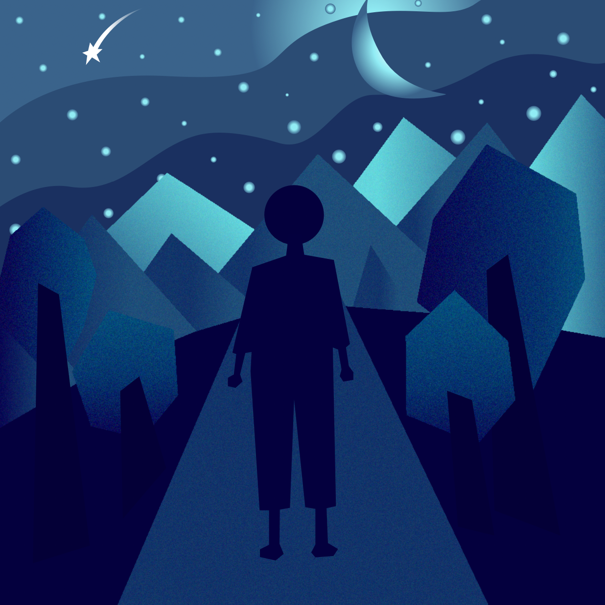

THE SOUND ITSELF
/The task in the project "The sound itself" is to listen to the online music and convey the sound based on my own imagination./
/The rapid and repeated beat of the music reminds me of the tension of a person's mood when there are so many eyes watching her. The use of orange and red pallete is intended to increase the tension of the illustraion./
/Contrary to the music of the previous illustration, the music of this picture tends to be gentle and slow, reminding me of a very large space with many trees, where people are healed emotionally./
/This project gives me new design experiences that I find to be extremely enjoyable, allowing me to enhance my imagination./


/back/
Ho Chi Minh, Vietnam
Contact: khngan.karyln@gmail.com